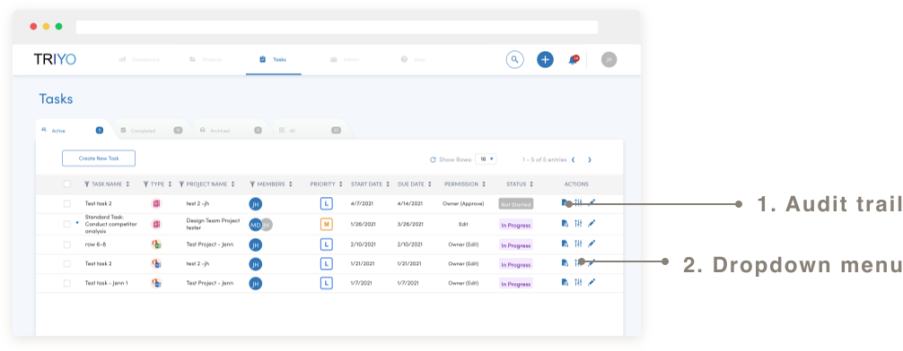
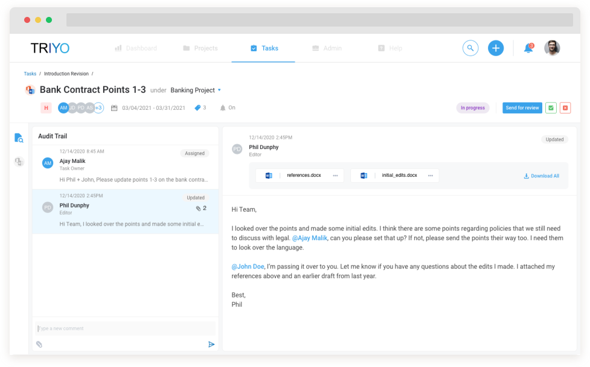
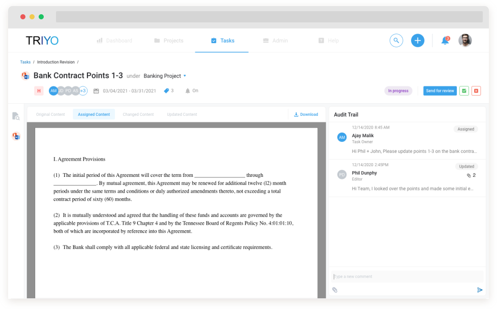
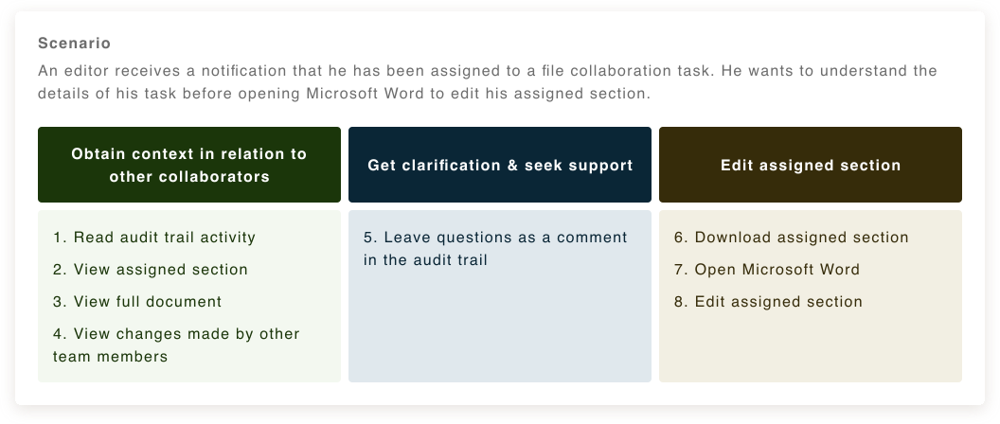
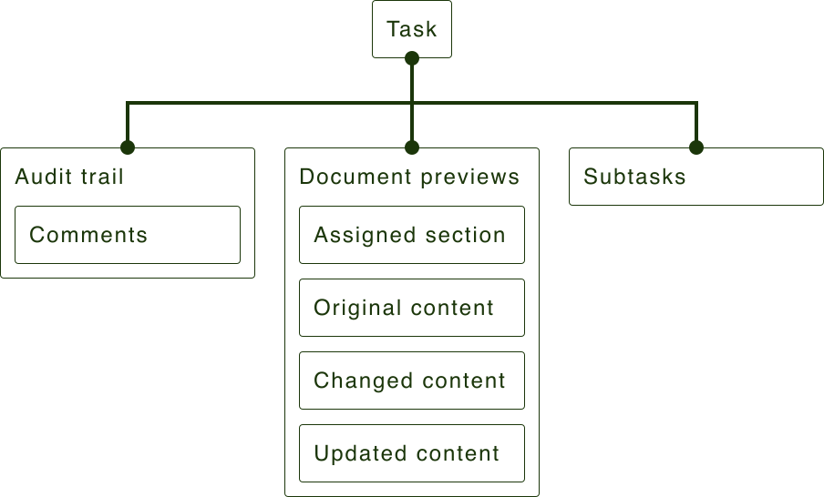
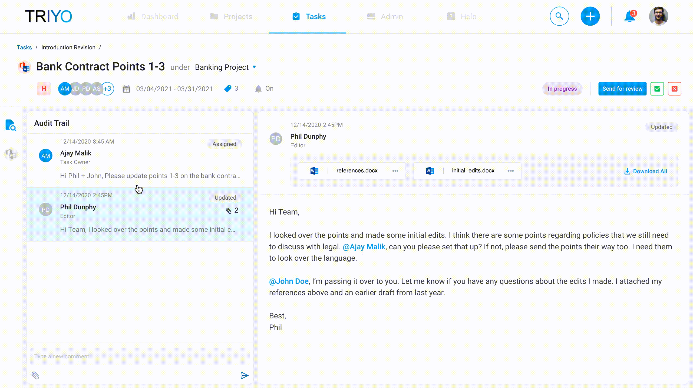
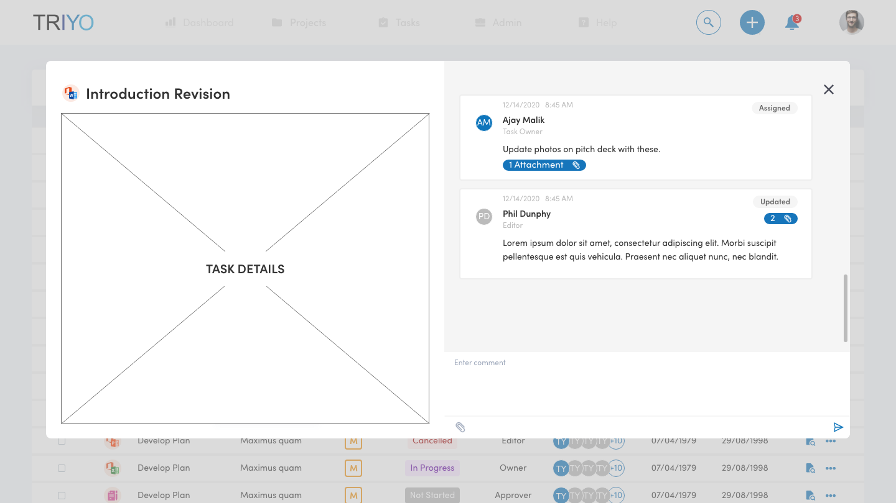
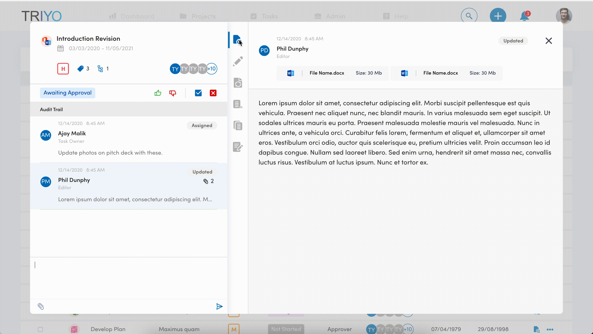
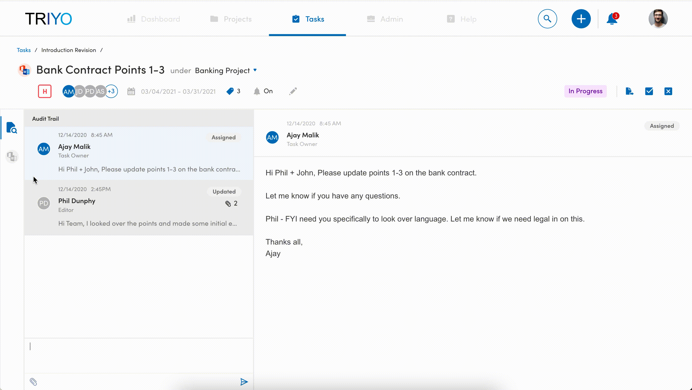

Current state heuristic analysis
In the current state of the web application, tasks are listed in rows on a table. The assignee clicks on action icons in the row to view dropdown selections for task details.



Designer (yours truly) and product manager
March 2021 - April 2021

Triyo is a Toronto-based startup that builds project and task management software catered to users in the finance industry. By integrating the Microsoft Suite into their software, Triyo allows project teams to collaborate on files without excessive change management. A file collaboration task is created when project managers assign different sections of a Word document to team members to edit or approve.
Currently, project managers upload Word documents to the Triyo web application and assign sections that assignees edit in an online editor.
The company newly developed a Microsoft Word add-in, which was intended for assignees to edit their sections offline.
The code used support the online editor was expensive and difficult to maintain.
Stakeholders wanted to direct assignees to the newly built Microsoft Word add-in. The assignee would edit documents offline and the company would remove the online editor from the application.
The audit trail lists any task-related activity and comments left by other team members.
Document previews present the document at different stages. The assignee can view the original document, the section of the document assigned to him, and any changes made to the document by himself or other team members.

After talking to stakeholders to have a better understanding of the problem space, I assumed the assignee would need to accomplish two goals to understand task requirements.
A task will have several collaborators. The assignee needs to understand his part of the task in relation to his team members'.
The assignee needs to communicate with his team members to seek clarity on task requirements or ask for support.
The journey map outlines how the user can use Triyosoft's web application to accomplish these goals.

In the current state of the web application, tasks are listed in rows on a table. The assignee clicks on action icons in the row to view dropdown selections for task details.

There are two major pain points with this user journey.
An overreliance on modals creates a disjointed user experience. It is difficult to obtain a coherent understanding of the task.
Information is hidden in dropdowns or in-between modals.
Reduce repetitive actions so users can efficiently obtain context of their task.
Improve access to task-related information so users have a better understanding of their task.
Support scalability of the product as new features are added.
There are several functional components to a file collaboration task.
Audit trail
Comments
Document previews
Assigned section
Original content
Changed content
Updated content
Subtasks
Grouping the functional components helped me determine a hierarchy, which would inform the navigational structure of my design options moving forward.


Upon creating a dedicated task file collaboration page, I divided the screen so the Audit Trail would always be visible. This is important because the Audit Trail records all activity associated with the task and is where communication between team members occurs. My assumption was that most comments in the Audit Trail would be brief updates with a few lines of text.

The director of product explained Audit Trail comments are generally longer and can be several paragraphs. This is because Triyo is integrated with Outlook, so project managers will send task requirements over email. The final design truncates the comment like Outlook would.
There were four states of the document to accomodate for. Using tabs to navigate between states was much more efficient that clicking in and out of modals. However, I received feedback that this navigational structure gave the appearance that the state of the document was associated with the activity described in the selected audit trail comment, which was not the case. The hierarchy of information was skewed.

The audit trail is separated from the document states. The icons are replaced with text, which requires less cognitive load for the user.

The prototype was given to three new hires within the company for feedback.
All three users commented that the new prototype was either more centralized or more efficient than the current design.
The audit trail was present between both tabs for convenience, but this was confusing for users. The transition from left to right sides of the screen was jarring.
Iterate on user feedback
Prepare files for handoff and support developers in build
Business goals were the inception for this project, but they can always be aligned with a better user experience. For this project, it was important to frame business goals with the user journey. Doing so opened up an opportunity for better UX within the product.
Working in a startup environment meant two-week sprints to research, define, and ideate. It is intimidating to push the envelope when time is of the essence! I found demoing multiple design options to stakeholders often led to more engaging conversations. I learned to prototype quickly and be less restrictive in initial stages with my low fidelity design options in order to encourage these types of user-centered discussions during early morning design reviews. Below are some screenshots of these low fidelity options.
💙 Jennifer
© Coded with 💙 by jennyfurhe